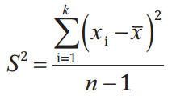

Medidas de dispersión
Las medidas de ubicación o posición, como la media o la mediana,
en muchas situaciones no solamente resultan insuficientes, sino que
pueden incluso conducir a errores de interpretación. Al respecto, nos
dice George Bernard Shaw:
“La estadística es una ciencia que demuestra que si mi vecino tiene
dos carros y yo ninguno, los dos tenemos uno”
Las medidas de ubicación como la media y la mediana sirven para
describir el centro de los datos, pero no permiten describir la extensión
de éstos ni su variabilidad. Por eso se requieren otras medidas
denominadas medidas de dispersión.
Las medidas de dispersión nos resumen la información de la “muestra”
o serie de datos, dándonos así información acerca de la magnitud del
alejamiento de la distribución de datos en relación a un valor central o
de concentración de los datos.
La estadística nos permite tener una visión del comportamiento de
una serie de sucesos o eventos a los que denominamos "variables",
así tenemos varias herramientas estadísticas como lo son la media
aritmética, la mediana y la moda.
Pero estas medidas no son suficientes para describir un conjunto
de datos, necesitamos conocer la variabilidad de los datos, es decir,
como se dispersan los datos reales en comparación a las medidas de
tendencia central, para esto contamos con esta nueva herramienta.
Las medidas de dispersión, son indicadores de variabilidad y cuya
importancia reside en la necesidad de tomar decisiones, basadas en
estadísticas básicas.
Los principales estadísticos de medidas de dispersión son:
- Amplitud o rango
- Desviación media
- Varianza
- Desviación estándar o desviación típica
- Coeficiente de variación
La amplitud
La amplitud en una colección de datos es la distancia entre los extremos, es decir, la diferencia entre el dato máximo y el mínimo. En el conjunto 3, 5, 6, 7, 21, 43, 54, 24, 28, los valores máximo y mínimo son 54 y 3, respectivamente. Por tanto,
Supongamos que unos excursionistas deben decidir si atraviesan o no un río a pie. Se les informa que, según una muestra tomada recientemente, la profundidad media del río es igual a 0,35 m. ¿Es suficiente este dato para tomar una decisión acertada? ¿Cuál sería su decisión en cada uno de los siguientes casos?
- La amplitud en la muestra es igual a 0.52 m.
- La amplitud en la muestra es igual a 1.65 m.
El conocimiento de la profundidad media del río no es suficiente para dar garantías de seguridad al cruzar el río a pie; podría suceder que en el tramo en que se pretende atravesar el río, el valor de la profundidad varíe considerablemente respecto a la media.
Caso 1. Supongamos que la amplitud de las profundidades del río es
igual a 0.52 m. Esto significa que la distancia entre las profundidades
extremas, la máxima M y la mínima m, es igual a 0.52, medida en
metros.
Esto es,
Puesto que la profundidad mínima m es menor que la profundidad media de 0.35, la suma
0.52 + profundidad mínima = 0.52 + m = M
Es menor que
0.52 + profundidad media = 0.52 + 0.35.
Por lo tanto,
M es menor que 0.87.
En conclusión, el río tiene una profundidad máxima de menos de 0,87 metros y, si los excursionistas son personas adultas de talla normal, pueden cruzar el río sin preocuparse por la profundidad de éste.
Caso 2. Consideremos ahora el problema en que la amplitud de las profundidades del río es de 1,65 metros. Como en el caso anterior, la profundidad máxima es igual a la suma de la amplitud y la profundidad mínima
M = amplitud + m = 1.65 + m
la cual tiene un valor menor que la suma de la amplitud y la profundidad media,
amplitud + media = 1.65 + 0.35 = 2.00
Por tanto, la profundidad máxima M tiene un valor menor que 2,00. Por otra parte, M es mayor que la media de 0,35 metros.
Vemos que en este caso la profundidad máxima se encuentra entre 0,35 y 2 metros de profundidad. Este intervalo es muy grande para las circunstancias del problema planteado, de modo que habría mucha incertidumbre en la toma de una decisión.
Como hemos comprobado la amplitud puede brindar información valiosa a la hora de decidir un asunto. Sin embargo, en muchos casos su utilidad resulta muy limitada.
Otras medidas de dispersión son la desviación media, la varianza, la desviación típica o estándar y el coeficiente de variación.
La desviación media
Anteriormente definimos la amplitud como la distancia entre el dato más alto y el más bajo. Similarmente, la desviación media puede tratarse como una distancia, pero con la ventaja de que, a diferencia de la amplitud, que sólo toma en cuenta dos datos, ésta medida considera toda la información.
La desviación de un dato x respecto a la media , es la diferencia x - entre él y la media. Esta puede ser negativa si el dato es menor que la media, o positiva, cuando el dato es mayor que la media o igual a cero cuando el dato es igual a la media.
Parecería natural definir la desviación media de un conjunto de datos como el promedio de las desviaciones, sin embargo, esto no proporcionaría ninguna información útil ya que, cómo se muestra en el siguiente ejemplo, la suma de las desviaciones es igual a cero.
Una forma de solventar el problema de la nulidad de la suma de las desviaciones es considerar, no las propias desviaciones, sino sus valores absolutos, es decir las distancias entre la media y cada uno de los datos. Esto da lugar a la siguiente definición.
Entre menor es la desviación media, más agrupados están los datos alrededor de la media y ésta los representa con mayor fidelidad. Por el contrario, entre mayor es la desviación media, más alejados están los datos de la media y por tanto hay mayor dispersión.
En una pequeña empresa los salarios devengados por siete empleados, expresados en miles de córdobas son los siguientes: 2,8; 2,9; 2,9; 2,9; 3,5. Calcular la desviación media.
De acuerdo con la definición, para calcular la desviación media se requiere determinar primero la media aritmética. Para los datos dados ésta es:
Salarios:
Las distancias entre los datos y la media aparecen registradas en la cuarta columna de la tabla de la página anterior. Su promedio, es decir su suma dividida entre la cantidad de datos, nos proporciona la desviación media:
Observe que la suma de las desviaciones es igual a cero como se dijo anteriormente.
La varianza
Si en la fórmula del cálculo de la desviación media cambiamos las desviaciones por sus cuadrados, obtenemos el indicador estadístico denominado varianza. Es decir,
Observe indicación en la columna izquierda.
La desviación típica o estándar
Si extraemos la raíz cuadrada a la varianza obtenemos la desviación típica o estándar, que es la medida de dispersión más utilizada.
Para los salarios de la empresa del ejemplo 7, la desviación estándar es igual a:
En el lenguaje corriente decimos que dos objetos están cercanos si se encuentran a poca distancia. Lo mismo decimos de una serie de datos y su media, si la desviación estándar es pequeña significa que los datos están agrupados alrededor de la media. Por el contrario, si la desviación estándar es muy grande entonces los datos están muy dispersos.
El coeficiente de variación
El coeficiente de variación, CV, es el cociente entre la desviación estándar y la media:
El coeficiente de variación, es una medida de la dispersión relativa de una serie de datos. Cuando CV, está cerca de cero, la media representa adecuadamente a la distribución de los datos, pero cuando su valor excede a 0.75, la media pierde representatividad.
Para el ejemplo abordado anteriormente, el coeficiente de variación es igual a:
lo cual significa que la media representa significativamente a los salarios de los cinco trabajadores.